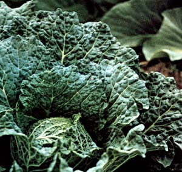
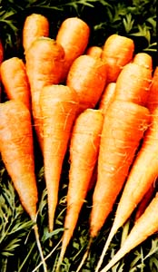
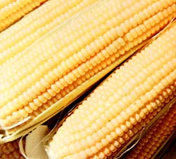
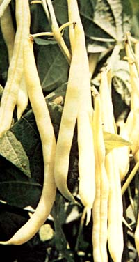
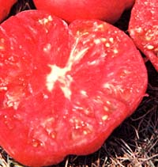
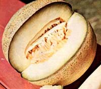
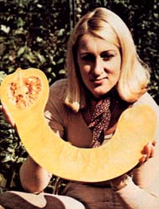
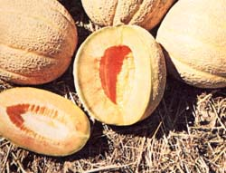
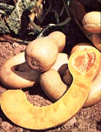
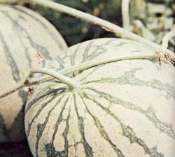

Vastly more flavorful sweet corn, tomatoes, cabbage, cucumbers, snap beans, radishes, yams, and squash! That's what Derek Fell-former manager of the Burpee seed catalog, author of Countryside Books' How to Plant a Vegetable Garden, one-time director of All-America Selections (the national seed trials), and gardener par excellence-promises ... and delivers.
When I was new to the seed business, I found it difficult to understand how anyone could breed a "better" vegetable variety ... an improved type of cabbage, say. Cabbage is cabbage, I reasoned. How in the world could anyone claim to have improved upon a crop that's been cultivated for hundreds-perhaps thousands -of years?
Eventually-as I gained experience raising and writing about new vegetables-I began to see how breeders could indeed create better crop varieties ... varieties that (through increased disease resistance, added productivity, etc.) could ensure greater success and enjoyment for the home gardener.
I also began to realize that although vegetables can be bred for many characteristics-early maturation, large size, extra vigor, high nutritional value, bright color, and so on- good flavor is probably the single most important quality a vegetable can have. After all, a tomato can possess exceptional disease resistance or have tremendous productivity ... but if it doesn't taste good, what's the point in growing it?
In order to grow truly tasty vegetables, one must know something about the factors that affect the development of good flavor. Factors such as:
[1] THE AGE OF THE VEGETABLE (OR FRUIT) AT HARVEST. As a rule, the mildest - and best-tasting vegetables are those that've been harvested as soon as possible after they've matured. This is particularly true of root crops, such as turnips and carrots.
[2] WEATHER. Moist, cool conditions favor the development of good flavor in root crops and leafy vegetables (lettuce, cabbage, etc.), while sunshine and summer-like temperatures promote palatability in melons, sweet corn, tomatoes, eggplant, and other warmweather fare. (Proper amounts of moisture, of course, are also vital to these crops. Drought conditions - for instance - at the time of ripening can drastically affect the eating qualities of corn and melons.)
[3] GENETIC BACKGROUND OF THE PARENT PLANT. Thanks to the efforts of seed companies and independent plant breeders the world over, home gardeners needn't eat the pithy, tasteless droppings of agribiz. Instead, they can grow spectacularly flavorful varieties of vegetables ... strains that've been bred not for good transportability or long shelf life, but for outstanding taste. Let's take a look at some of the more toothsome vegetable varieties currently offered by seed companies, and the problems (if any) peculiar to them.
There's a familiar saying that in order to eat delicious corn you've got to have the water boiling as you pick the ears. With standard varieties of sweet corn, this is true ... but not so with the new "super sweet" strains, such as Early Xtra Sweet and Illini Xtra Sweet. Thanks to the presence of what plant breeders call "extra sweet" genes, the conversion of sugar to starch takes place much more slowly in these varieties than in other types of corn ... making it possi ble to enjoy good-tasting ears several days after they've been picked.
Super-sweet corns do have one drawback: They must be kept isolated, since cross-pollination with regular sweet corn will result in loss of the varieties' unique flavor. Breeders, however, are well on the way to developing improved super-sweets that don't require isolation. (I'm told that one of these-Golden Beauty-will be available this year for the first time. See the accompanying sidebar, "Where to Obtain the Vegetable Varieties Mentioned in This Article", for the addresses of seedsmen.)
Another incredibly delectable sweet corn-a dazzling white hybrid-is Silver Queen. Despite the fact that it matures slowly (it needs 92 days, on the average, from planting to harvest), the supersweet taste and huge ears of this relative newcomer have already converted many folks from yellow to white corn.
Sweet corn is one crop the flavor of which has been vastly improved in recent years. But that game is played both ways. I can, for instance, name a least one "old favorite" which-though developed long ago-tastes better than its modern equivalents. That old favorite is a pole bean called Lazy Wife, which was first introduced in the 1880's and then dropped from most catalogs around 1930.
Lazy Wife does have several faults. Lack of resistance to disease, for one Extreme sensitivity to cold temperatures (seeds must be planted well after any danger of frost), for another. And slow maturation (you're not likely to get a first picking until late August or early September), for a third. But its plump, buttery-flavored, completely stringless beans are superb eating, and the older they get the better they taste (until, finally, the pods turn yellow and brittle).
You can buy Lazy Wife from R.H. Shumway (see accompanying sidebar).
Although pole beans generally taste better-and crop over a longer period-than bush-type snap beans, many gardeners find the compact bush varieties easier to grow. For such grow-your-own enthusiasts, I recommend: [1] a savory new dwarf Romano called Roma, and [2] the delicious new yellow wax bean called Goldcrop. (The latter produces heavy yields of long, straight, pencil-thin and icicle-brittle pods.)
It's probably hard for a beginning gardener to believe that the mild flavor of a cucumber can vary from one variety to the next, but it can ... and does. If you doubt my statement, try growing the new, non-bitter Burpless cucumber this summer. Its long, slender, dark-green fruits are heavily spined, but so tender you can eat 'em whole-skin and all-just like sticks of candy. (And, if you grow the plants on a trellis so that the maturing cukes hang straight down and don't curl, they'll also be as straight as sticks of candy.)
I met the "inventor" of the Burpless cucumber-Mr. T. Sakata-during a recent visit to Japan. When asked why he'd chosen to call the plant "Burpless", he replied that the name had been suggested to him by an American housewife who found that the fruits failed to give her indigestion ... and he liked it.
When I was young, I was served turnips with school dinners, and-as many youngsters do-found them repugnant. For that reason I avoided eating the vegetable altogether for the next several years.
Then one day-at a barbecue buffet-I helped myself to some small, white, golf-ball-like victuals that I thought were new potatoes. They were sensationaljuicy, super-sweet, mild-but definitely not potatoes. I was later amazed to discover that what I had eaten were, in fact, turnips ... a new variety called Tokyo Cross. I've been growing them in my garden ever since.
The beauty of Tokyo Cross turnips is that they mature within just 35 days of the time they're planted. For best flavor, pick them when they're the size of baby beets. (They can be left to grow larger, if you wish ... and-of course-their tops are edible.)
If you like tomatoes-and you want to experience good "old-fashioned" flavor-I recommend you try a variety (first introduced around 1892) called Ponderosa. The pinkish-red flesh of this tomato is exceptionally meaty, with very few seeds, and has a smooth, low-acid flavor. Although Ponderosa is a late-maturing variety and won't win any prizes for productivity, the gigantic (up to two pounds apiece), succulent fruit are-in my opinion-well worth the wait.
Then again, for a dependable combination of good size, superb flavor, AND high yield you might want to try Joseph Harris's Supersonic tomatoes. I grow several varieties of "love apples" every year out of curiosity, but I always rely on Supersonics for my main crop of beautiful, red fruit.
And a new cherry tomato that's being offered for the first time this year is Sweet 100 ... so called because [A] it's sweet-tasting and [B] it has the remarkable ability to produce 100 ripe tomatoes on a single stem ( 500 or more fruits per plant ). According to its creators, Sweet 100 is not only flavorful and prolific but it also has the highest vitamin C content of any tomato.
I grew Sweet 100 in my garden last year and can vouch for the fruit's superb taste. (I was also fascinated by the way the plant's long, slender flower stems uncurled like watch springs before giving rise to numerous fruit-studded side-stems.)
Cabbage-lovers agree that the savoy varieties-with their dark, crinkly outer leaves and sunshine-yellow centers-are tops in the flavor department. And one of the best-tasting of these is the new Savoy Ace, which All-America Selections has chosen a gold medal winner for 1977. The tight, solid heads of this magnificent vegetable will stand in the garden for more than a month without bursting, even in the hottest weather ... and the flavor certainly won't let you down. Try it. You'll love it.
My favorite radish is the Cherry Belle, a red variety with crisp white flesh that's ready to eat within 22 days of planting ... providing there's been no hot and/or dry weather during the intervening period. (Constant moisture throughout the growing period-and an early harvest thereafter-is the secret of clean-tasting, crisp radishes.)
Unless I'm wrong, the entire gardening world is about to be revolutionized by an entirely new type of vegetable called Snap Peas. This edible-podded pea will feature many of the characteristics of snap beans, yet will be earlier than beans, sweeter-tasting than sugar peas, and twice as productive as any green pea. (If you ask me-and I've been growing trial plantings of this unusual vegetable for some time-Snap Peas will, when they hit the market in a couple years, vie with the tomato in national popularity. They're that good.)
Until we can all grow Snap Peas, however, the best we can do is to sow our regular peas early and provide them with plenty of moisture to bring out their full flavor. (Moisture is particularly important to these plants, since even the slightest dry spell will halt their growth.)
Have you grown sweet potatoes lately? I tried raising them years ago as a beginner, with poor results. Last year, however, I had good luck with two varieties-a vine by the name of Centennial and a bush-type called Puerto Rico-which I planted as late succession crops in place of some spinach.
Centennial came through with the highest yields (and pretty fair flavor), but the P.R.'s had a more distinctive taste ... one that reminded me of roasted chestnuts. From now on, I'll never be without my Centennials for sheer size and yields ... but-for that uniquely nutty flavor-I'll also always grow Puerto Ricos.
It's hard to generalize about the flavor of squash, since there are so many kinds (and since personal tastes vary so widely). As a rule, though, winter squash varieties (acorn, butternut, Hubbard) tend to have a deeper, more filling flavor than summer varieties (zucchini, yellow crookneck, etc.), and-among the winter varieties-the vine-growing types seem to be tastier than bush types.
For the past several years, I've tested a really remarkable-and incredibly large-new winter squash called Pie Squash, Tahiti Squash, or Melon-Squash. (I prefer the last name.) The individual fruits-which grow to 40 pounds on vines that resemble those of butternut squash-of this plant are bow-shaped and feature a round, golden-yellow seed cavity at one end, with an enormous neck full of edible flesh at the other. When immature, the fruits are dark green ... but as they ripen, they turn a yellow color outside and a deep orange inside.
I love to cut small pieces of Melon-Squash into sticks or wafers and eat them with dips. (The sweet and flavorful raw flesh has the texture of a carrot and-roughly-the flavor of a cantaloupe.) The meat, however, is also delicious when boiled for a few minutes, or fried in batter and served for breakfast.
Melon-Squash seeds will be available (for the first time) this year from Thompson & Morgan.
In this short space I haven't been able to discuss anywhere near all the distinctive and delicious varieties of vegetables that are currently available from seedsmen. (Rather, I've limited myself to just a few of my personal favorites.) I hope, however, that this discussion has inspired you to try new and unusual garden varieties of all kinds ... and that-as a result-you'll experience for yourself the kind of flavors that are so good, you (and your friends) will never forget them.
Fertile soil and warm, sunny weather at the time of ripening are critical to the development of superb flavor in melons. For this reason, I always [1] grow my cantaloupes and watermelons in a special bed loaded with well-decomposed horse manure (and supplemented with a general-purpose fertilizer), and [2] make at least two plantings-spaced a couple of weeks apart-so that even if one crop becomes waterlogged as a result of a rainy spell during the last crucial days of ripening, the other probably will still be OK.
Also, a black plastic "mulch" is definitely beneficial to melon crops, since it serves to advance ripening, conserve moisture, and maintain an even soil temperature (which-in turn-keeps those fruits growing happily even on chilly nights).
If you're growing watermelons for the first time, I'd recommend you start out with a new ice box variety called Yellow Baby. This fruit's unusual, pineappleyellow flesh is absolutely delectable (right down to the outermost millimeter or two of skin), and averages 50% fewer seeds than other ice box varieties. (Moreover, I'm told by the plant's Chinese breeder that Yellow Baby is one of the most cold-tolerant of all watermelons.) I've grown this novel fruit for three years now, and haven't had a bad one yet.
Seedless watermelons aren't particularly easy to grow-they require higher temperatures to ripen and must have another hybrid nearby to act as a pollinator-but if you feel up to the task, I can't think of a more splendid variety to try than Burpee's Triple Sweet Seedless Hybrid. Triple Sweet's succulent, sugarsweet fruit makes all other watermelons seem insipid by comparison.
The selection of cantaloupe varieties is a very personal matter. Some folks like the highly productive and large-fruited Burpee Hybrid ... others are loyal to such varieties as Pride of Wisconsin or Honey Rock. For sheer mouthwatering flavor, however, I'll take an Israeli cantaloupe called Haogen any day. The outer flesh of this small (5" to 6" across), smooth-skinned melon is greenish in color, with a salmon-tinted seed cavity ... and the taste is-just as the Burpee catalog says- indescribably delicious.
Give Heogen a try. I think you'll find-as I have-that It's the best-tasting cantaloupe of all.- DF .
Burpee Hybrid cantaloupe
Honey Rock cantaloupe
Pride of Wisconsin cantaloupe
Illini Xtra Sweet corn
Silver Oueen corn
Roma snap bean
Triple Sweet watermelon
Yellow Baby watermelon
W. Atlee Burpee Co.
300 Park Ave.
Warminster, Pa. 18974
Supersonic tomato
Joseph Harris Co.
Moreton Farm Rochester,
N.Y. 14624
Lazy Wife pole bean
R.H. Shumway
628 Cedar St. Rockford,
Ill. 61101
Puerto Rico sweet potato
Steele Plant Co.
Gleason, Tenn. 38229
Savoy Ace cabbage
Golden Beauty corn
Goldcrop snap bean
Ponderosa tomato
Stokes Seeds
Box 548
Buffalo, N.Y. 14230
Haogen cantaloupe
Early Xtra Sweet corn
Burpless cucumber
Melon-Squash
Cherry Belle radish
Centennial sweet potato
Sweet 100 cherry tomato
Tokyo Cross turnip
Thompson & Morgan Inc.
Box 24 Somerdale,
N.J 08083
|
 |
 |
 |
|
 |
 |
 |
|
 |
 |
 |
|
 |
|
|